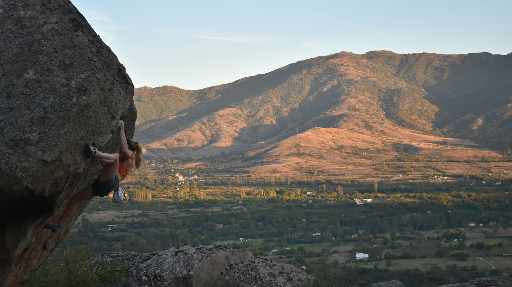
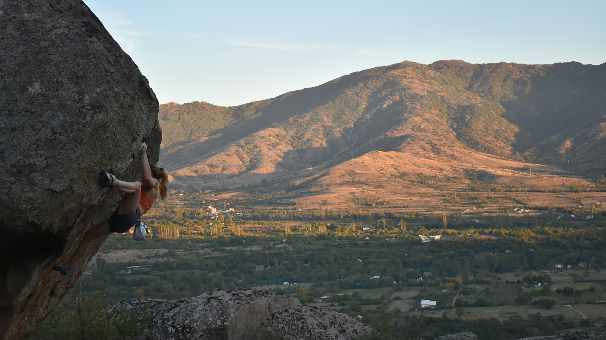
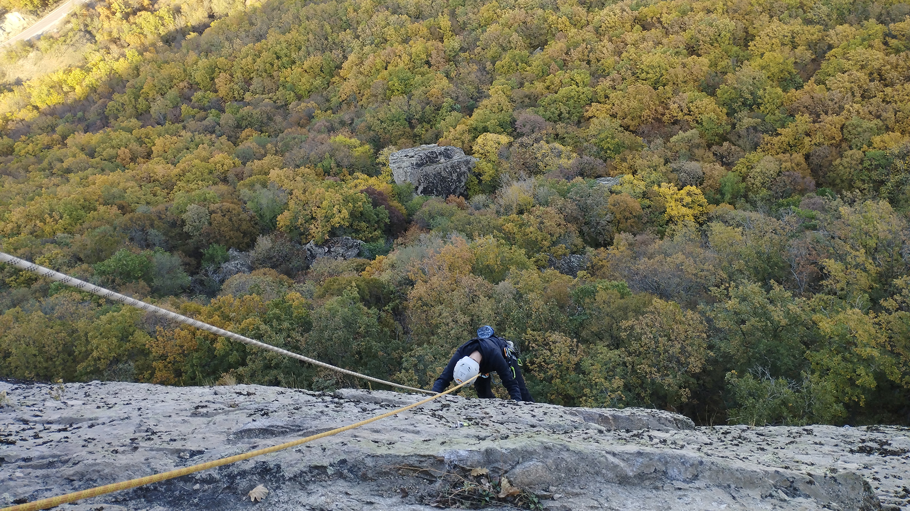
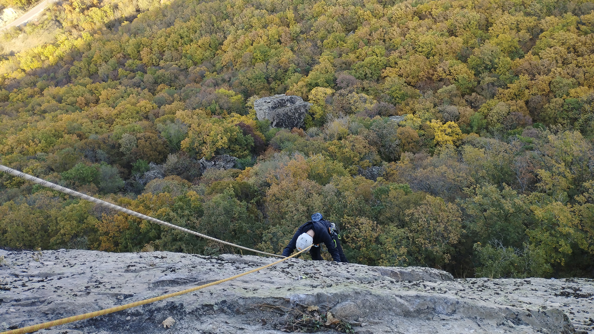
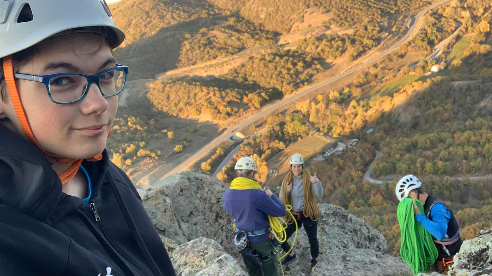
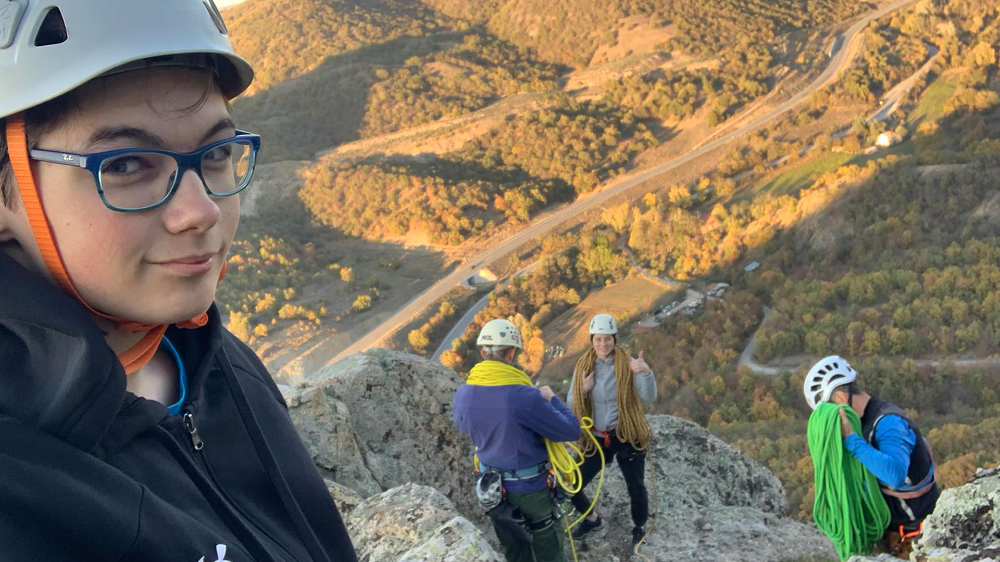

100 ГОДИНИ ЗЛАТОВРВ
На 16-ти ноември се одржа свечена академија по повод прослава на 100 годишнината од постоењето на клубот Златоврв. Со кратка презентација за својот удел и значајни придонеси кон спортот се претставија клубот за спортско качување, спелеолошкиот клуб и клубот за ориентација. Во рамки на прославата, беа доделени плакети за заслуги, благодарници за придонес, соработка и нова надеж во спортот. Во рамки на нашиот клуб, на проф. Христо Белакапоски му беше доделена плакета за особен придонес во спортското качување, а со благодарници се закитија членовите на клубот Михаил Јанкоски и Цвете Јандреоски. Настанот го заокруживме со организиран планинарски марш до врвот Златоврв. На сите учесници им благодариме за поддршката, за негување на љубовта и страста кон спортот и планината!


ПРИЛЕП БОЛДЕР ВИКЕНД 2024
Во периодот од 27 - 29ти септември се одржа Prilep Boulder Weekend под мотото: WOMEN POWER! Овој настан во фокус ги стави жените а со цел нивно рамноправно учество во спортот, подигнување на нивото на свест, меѓусебна соработка, поттик, согледување на сите придобивки кои спортот ни ги овозможува. Наш почесен гостин беше светски познатата Мина Маркович чиешто искуство и љубов кон спортското качување го сподели несебично со сите нас! СКК Златоврв уште еднаш беше во улога на организатор на настан кој долго ќе го паметиме. Им благодариме на TAKT (Together Advancing Common Trust) кои беа официјални спонзори на настанот.

 



МЕМОРИЈАЛЕН АЛПИНИСТИЧКИ СОБИР
Mеморијалниот алпинистички собир “Зоран Мајсторски” се одржува на локалитетот Пилав Тепе - Радовиш, во чест на македонскиот алпинист и наш голем пријател. Екипа на СКК Златоврв зеде учество и оддаде почит со искачување на неколку нови алпинистички насоки. Марија и Михаил кои се релативно нови членови, за прв пат имаа можност да качуваат во наврска и успешно качија алпинистички насоки 5 a, 5 b.
 

 
